色の印象
色から連想されるイメージには陰と陽があります
赤
陽:情熱、愛情、勝利、積極的、衝動
陰:危険、怒り、争い
適したもの:飲食、セール等々
黄
陽:明るい、活発、陽動、希望
陰:臆病、裏切り、警告
適したもの:食品、スポーツ等々
桃
陽:可愛い、ロマンス、若い
陰:幼稚、繊細、弱い
適したもの:ブライダル、女性向けの物等々
橙
陽:親しみ、陽気、家庭、自由
陰:わがまま、騒々しい、軽薄
適したもの:コミュニティー、飲食、キッズ等々
紫
陽:高級、神秘、上品、優雅、伝統
陰:不安、嫉妬、孤独
適したもの:ファッション、ジュエリー、占い等々
茶
陽:ぬくもり、自然、安心、堅実、伝統
陰:地味、頑固、汚い
適したもの:宿泊施設、インテリア、レトロ等々
青
陽:知性、冷静、堅実、清潔
陰:さみしさ、冷たい、悲しみ、臆病
適したもの:コーポレート、医療、化学
白
陽:祝福、純粋、清潔、無垢
陰:虚無、殺風景、冷たい
適したもの:医療、ニュース、美容等々
緑
陽:自然、平和、リラックス、若さ
陰:保守的、未熟
適したもの:アウトドア、飲食、農業等々
灰
陽:実用的、穏やか、控えめ
陰:あいまい、疑惑、不正、無気力
適したもの:工業、家電、ファッション等々
黄緑
陽:フレッシュ、ナチュラル、新しい
陰:未熟、子供っぽい
適したもの:新生活、先進的なもの等々
黒
陽:高級、エレガント、洗練、一流、威厳
陰:恐怖、不安、絶望
適したもの:車、ジュエリー等々
心理効果
色の心理効果によって同じものでも軽く見たり重く見えたり 同じ位置なのに遠くに見えたり近くに見えたり色から得る 心理効果があります
暖色と寒色(色相)
暖色:赤、橙、黄などは温かく感じる
寒色:青、青緑などは冷たく感じられる
中性色:緑、紫などどちらとも感じない
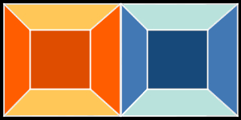
進出色と後退色(色相)
色によっては実際には同じ位置にあっても
近くに見えたり遠くに見えたりする
長波長の色(赤などの暖色)などは近づいて見える
短波長の色(青などの寒色)などは遠くに見え
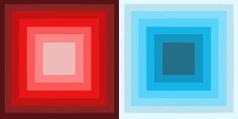
膨張色と収縮色(明度)
明度が高いもの:大きく見える
明度が低いもの:小さく見ええる
色相が違っても明度が同じなら
大きさはほとんど変わりません。
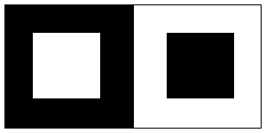
軟らかい色と硬い色(明度・色相)
明度が高いもの:軟らかく見える
明度が低いもの:硬く見える
暖色:軟らかく見える
寒色:硬く見える
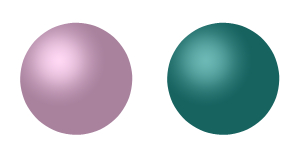
軽い色と重い色(明度)
明度が高い(明るい)色ほど軽そうに見える
明度が低い(暗い)色ほど重そうに見える
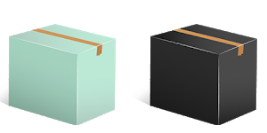
興奮色と沈静色(色相・彩度)
鮮やかな暖色は興奮色
彩度が低い寒色は沈静色
色の均衡
配色の基礎技術としてカラーテーマを決め ベース・メイン・アクセントに分けて配色していく
ベースカラー
最も大きな面積を占める基本となる色で、余白や背景などに用いることが多い色です。
主にサイトの背景色となる色です。白無彩色は他のメイン・アクセントカラーの色の妨げになりにくいので、よく使われているます。
文字間、コンテンツ間の余白などにも使われることが多いので、明度の高い色、淡い色を意識して使ってみるとしっくり収まります。
メインとアクセントのカラーを引き立てる脇役的な立ち位置。
メインカラー
メインカラーの傾向は、文字が読みやすいなどの可読性の問題から、明度を低くした色が使用しやすいとされています。
使用する色を決める基準としては、ターゲットイメージに合わせた色を探す必要があるので、色の印象を把握しながら決めると良いと思います。
サイトの印象を決定づける主役の色。
アクセントカラー
単調なトーンにメリハリをつけたい時などに使う色です。全体に占める面積の割合は一番小さく、最も目立つ色となることが理想です。
色は1色使いでなくてもいいのですが、色が増えるほど扱うのは難しくなります。「賑やか」「楽しい」といったサイトイメージを表現したい場合には多色使いが有効です。
ユーザーの目を引く役割の色。
比率
各色の比率はベースカラーが70%、メインカラーが25%、アクセントカラーが5%
この割合にすると美しい割合の配色になります。
70%
25%
5%
色相配色
色相環から配色の基本を考える
同一色相配色 (モノクロマテック)
色相が同じ色同士の配色を指します。
彩度と明度を変えて配色するだけで完全に同じ色味を持った色なので
共通性があり、統一感がある配色にな
※無彩色は色相がないので無彩色+有彩色でも同一色相配色となる
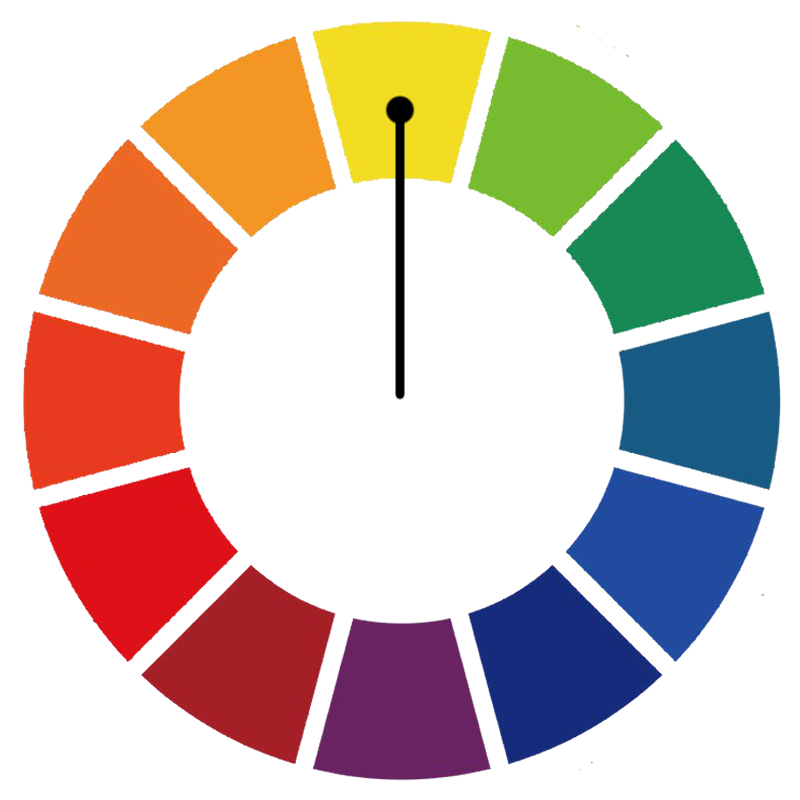
類似配色 (アナログ)
色相が隣り合う色の組み合わせを指します。
黄橙・黄・黄緑など同じ系統で配色す
色味が近いので失敗が少ない配色ですが変化に乏しくなる場合もある
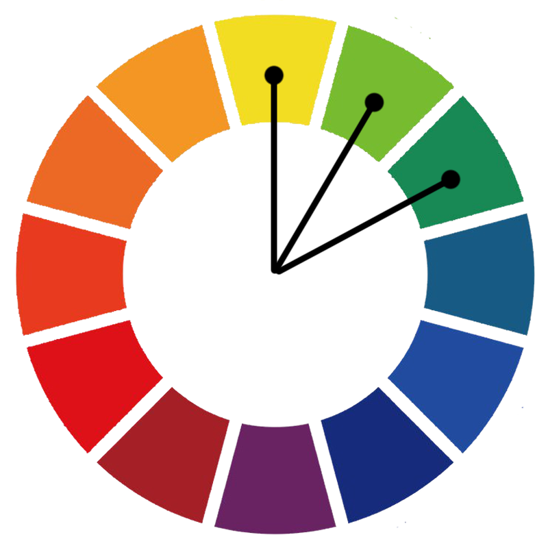
補色配色 (ダイアード)
色相が反対の色の配色を指します
両方に全く共通性がなく
単に色相が異なるというだけではなく変化が強く
派手で力強い印象いなる
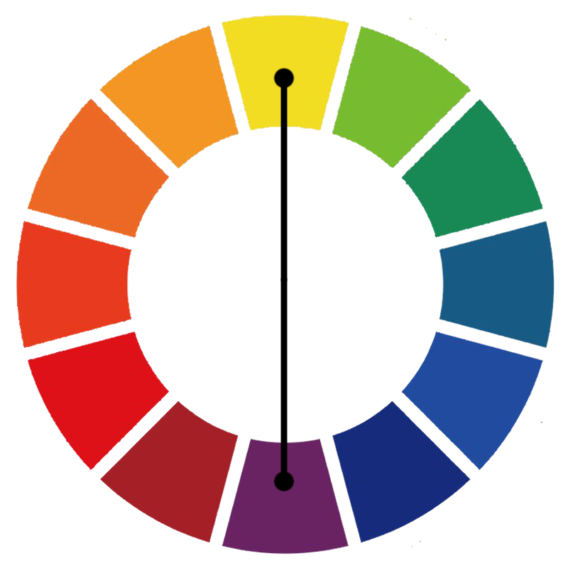
分裂補色配色 (スプリットコンプリメンタリー)
色相環で補色の関係にある片側の色相の 両隣の色相を用いた3色の配色を指します。
全体の調和が取りやすい配色です
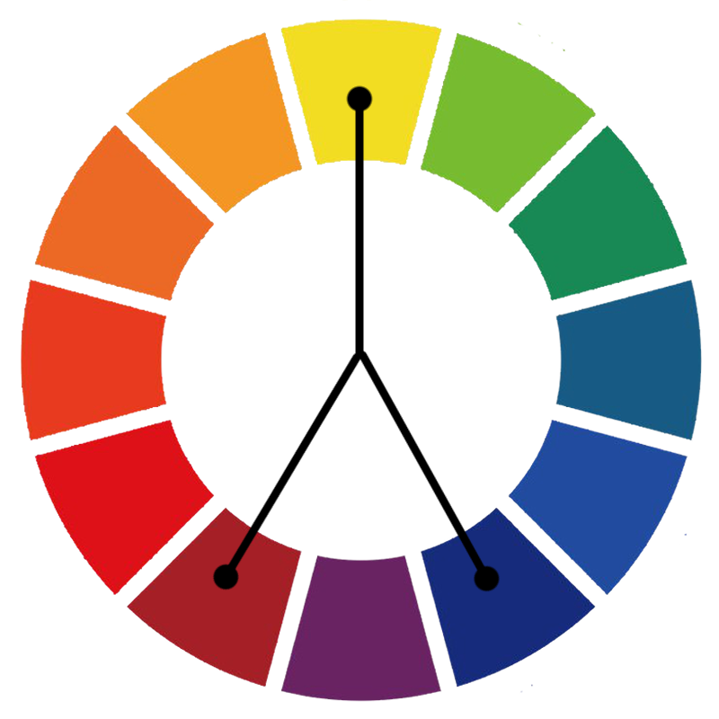
三色配色 (トライアド)
色相環で正三角形に結んだ頂点の色で 組み合わせる配色を指す
変化に富み、強い印象を与えながらも調和のとれた配色になる
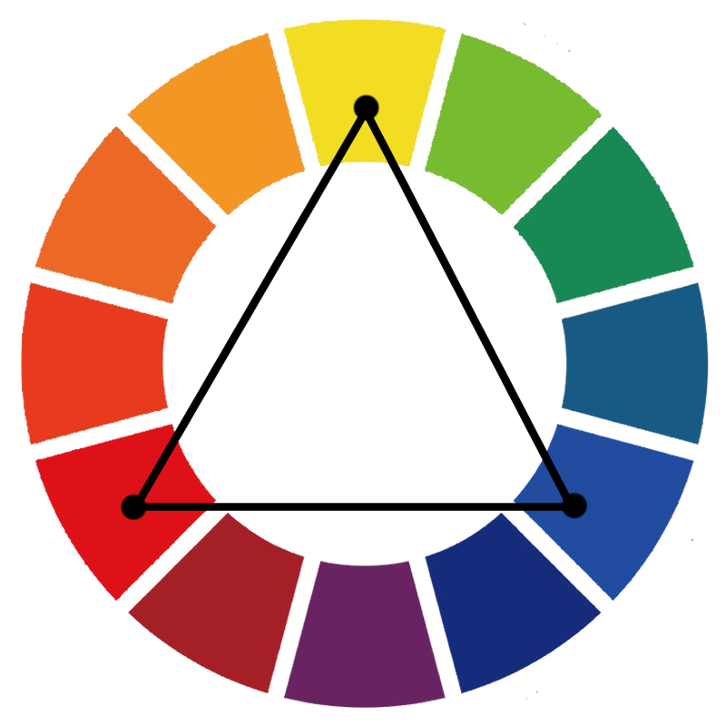
四色配 (テトラード)
色相環を四等分した組み合わせるとこを指します。
補色の関係にあたる二組を組み合わせるのでにぎやかで派手な印象になりやすい
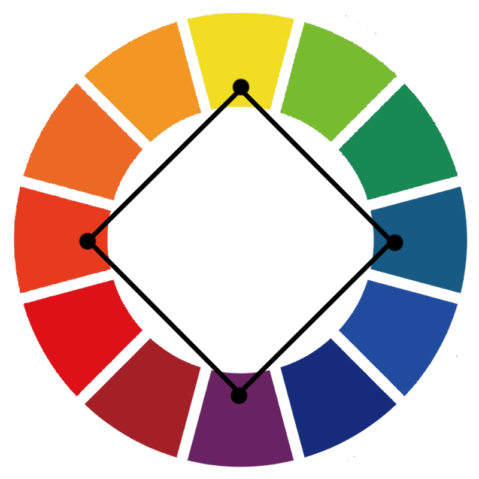
トーン配色
色相以外にも彩度と明度でも色の持つ印象が変わってきます 色相環を彩度と明度で分けたトーンマップを 使って違って印象を与えることもできます

{kind=link}
ドミナント・カラー配色
トーンを3つ以上組み合わせて色相が同一(類似色も可)で構成された配色
色が持っているイメージを打ち出しやすい
ドミナント・トーン配色
トーンは同一(類似トーンで可)で色相を3つ以上組み合わせた配色
トーンが持っているイメージを打ち出しやすい
トーン・オン・トーン配色
大きく明度差を取ったトーンを組み合わせて、色相が同一(類似色でも可)で構成された配色
統一感を持たせつつ明快さを出したときに使う
トーン・イン・トーン配色
トーンは同一(類似トーンでも可)で、色相は自由に組合わせられる配色
ドミナント・トーンの一種
カマイユ配色
トーンと色相が同一(類似でも可)で組み合わせた配色
色相・彩度・明度の差がほぼないので遠目に見ると単色に見えるような組み合わせ
トーナル配色
トーンが中間同士の配色で色相が自由に配色できる
落ち着いたイメージを打ち出しやすい